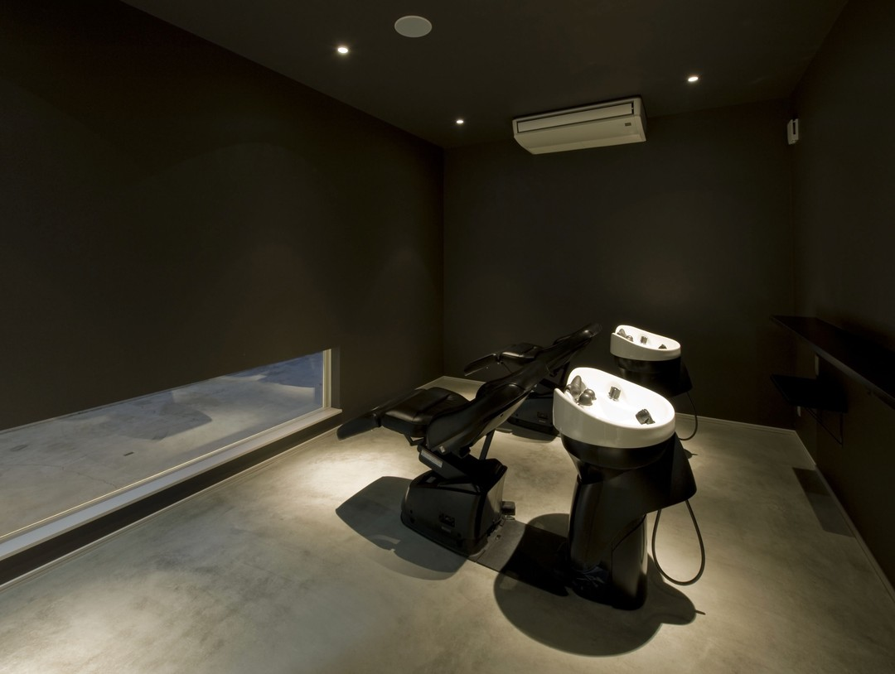
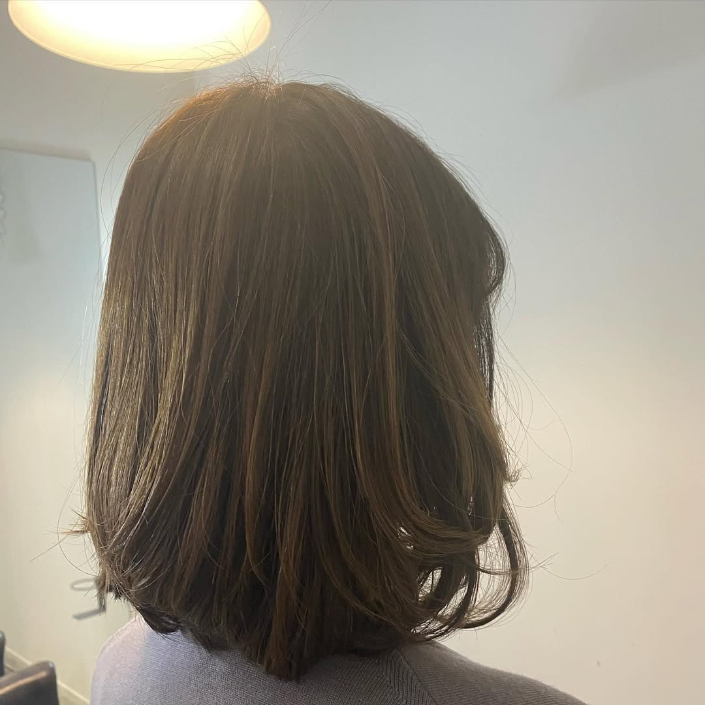
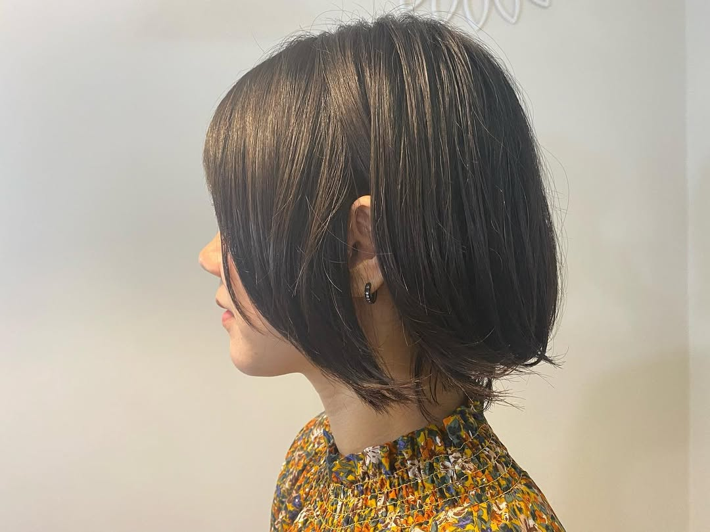
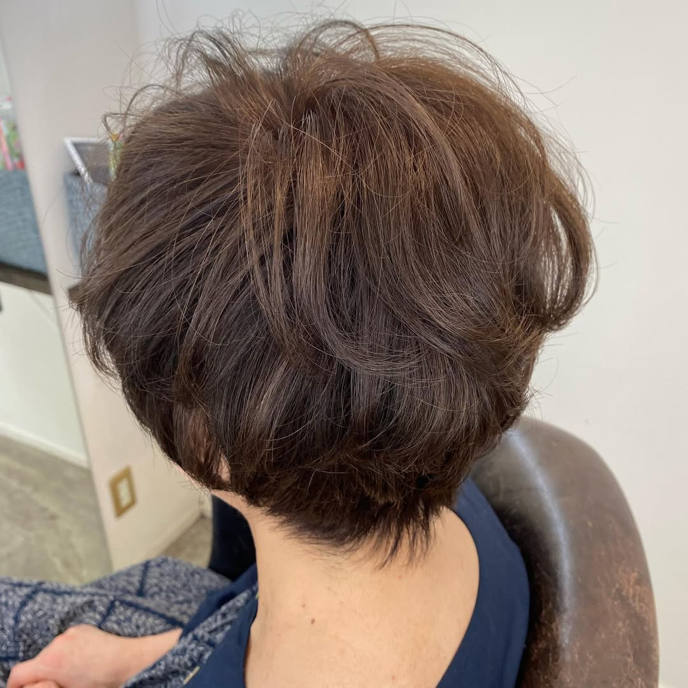
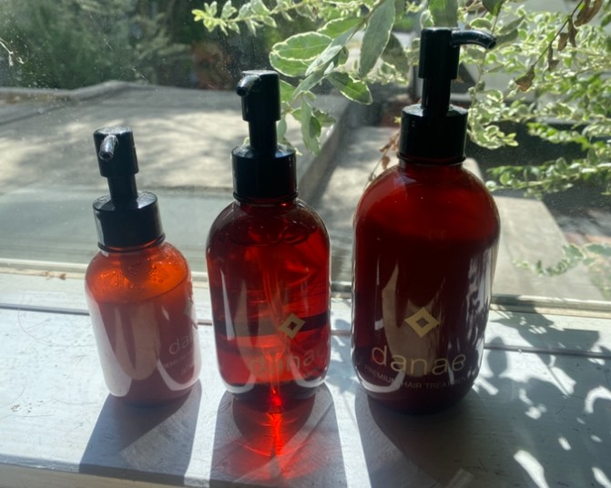
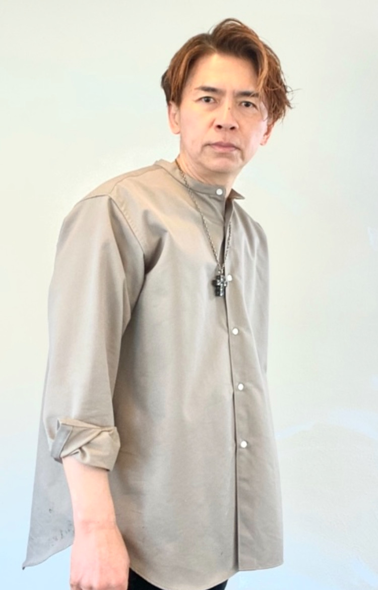

大人メンズの悩みを魅力に変える
白髪、髪質、ボリューム、頭皮など、大人男性ならではの悩みに合わせたスタイルをご提案します。
得意とするメンズカットやパーマを中心に、カラーやメッシュ、白髪を活かしたデザインまで幅広く対応。
自宅でも整えやすい再現性の高いカットで、年齢を重ねても清潔感とおしゃれを楽しめるスタイルへ導きます。


24時まで営業・夜間ナイター対応
本日・当日予約も歓迎！
※完全予約制ですが、お電話・LINEにてお気軽にお問い合わせください。
そのお悩み、当店が解消します！当店は、ただ白髪を隠すのではなく
「白髪があるからこそ楽しめる、上品で若々しいデザイン」
をご提案する大人女性のためのサロンです。
「ブリーチ＝痛む・派手になる」は過去の話。
当店では、髪に残った濃い白髪染めの色素をブリーチで優しく整え、その上に透明感のある色を重ねます。
白髪を活かしたハイライトやデザインカラーを入れることで、以下のような嬉しい変化が生まれます。
「パーマをかけたら強いカールで爆発してしまった…」
そんな苦い経験はありませんか？
当店では「無駄にかけすぎないパーマ」を大切にしています。
必要な部分にだけプラスし、柔らかい薬剤「クリームパーマ」を使用するため、髪を傷めず乾かすだけで決まる自然な立ち上がり・質感が手に入ります。
ブリーチやカラー、パーマを美しく仕上げるために、ベースとなる髪と頭皮の健康は欠かせません。
当店は「髪の病院」の認定者として、施術の前後に髪の状態に合わせた本格ケアを組み合わせます。色持ち・質感の維持まで妥協しません。
加齢による髪質の変化、うねり・広がり・パサつきでお悩みの方には、柔らかな「髪質改善ストレート」をご提案。
必要以上に硬く真っ直ぐにしすぎず、生まれつきのような自然なツヤとまとまりを取り戻します。
カットは世界最高峰のヴィダルサスーン・ディプロマを取得。
骨格・毛流れ・雰囲気に合わせてミリ単位で計算してカットするため、ご自宅でも手ぐしやドライヤーだけでサロン帰りのスタイルが再現できます。
「今日思い立って髪を切りたい」「お仕事帰りにしか時間が取れない」という大人女性のために、深夜24時まで営業しております。
完全予約制ですが、当日の空き状況次第でご案内可能です。まずはお気軽にお問い合わせください！

デザインを楽しみながらも大切なケアを両立することで、髪本来の美しさを引き出し、長くヘアデザインを楽しんでいただけるようサポートいたします。

サスーン理論に基づいた正確なカット技術を軸に、骨格・髪質・毛流れを見極めた再現性の高いデザインをご提供します。
伸びても形が崩れにくく、大人世代でも扱いやすいスタイルを重視しています。

白髪をただ隠すのではなく、若見えするハイライトやブリーチを取り入れたデザインカラーを積極的にご提案します。
大人世代こそ、ケアを重視しながらデザインを楽しめる施術で、美しさと似合わせを両立します。

髪の病院認定者として、特に頭皮ケアを重視し、頭皮と髪の状態、施術履歴に合わせた最適なケアをご提案します。
その場限りではなく、今後の髪がより良くなることを考えた施術を大切にしています。
一度きりの仕上がりではなく、次回来店や数か月先まで見据えた施術設計を行っています。
白髪、エイジング毛、ダメージの進行を抑えながら、無理なくデザインを楽しめる計画をご提案します。
カウンセリングから仕上げまで、マンツーマン施術で一人のスタイリストが最後まで担当します。
お客様一人ひとりの悩みや希望に丁寧に向き合い、安心して相談できる空気感と、長く通える関係づくりを大切にしています。
白髪、髪質、ボリューム、頭皮など、大人男性ならではの悩みに合わせたスタイルをご提案します。
得意とするメンズカットやパーマを中心に、カラーやメッシュ、白髪を活かしたデザインまで幅広く対応。
自宅でも整えやすい再現性の高いカットで、年齢を重ねても清潔感とおしゃれを楽しめるスタイルへ導きます。
年齢とともに変化する髪や頭皮のお悩みは、まさに人それぞれ。
だからこそ、当店ではその場限りの仕上がりではなく、「これから先も髪がより良くなること」を大切に考え、頭皮ケアを中心に一人ひとりに最適な施術をご提案しています。
白髪をただ隠すだけでなく、若見えするデザインや新しいヘアスタイルにも、安心して挑戦していただけるよう心を込めてサポートいたします。
大人世代だからこそ、デザインとケアの両立を存分に楽しみ、髪を通して前向きな毎日を過ごしていただけることが、私たちの願いです。


オーナースタイリスト
美容師歴30年。独立して20年。
美容という仕事が好きで、時間を忘れて没頭してしまうほど、この仕事に向き合ってきました。
基礎となるカット技術は、ヴィダルサスーンで学んだ理論と技術を軸にしています。
さらに現在は、髪の病院認定者として、薬剤知識やケミカル分野にも力を入れ、髪や頭皮への負担を抑えた施術を徹底しています。
安心・安全・そして将来の髪の健康まで考えたカラー、パーマ、トリートメント。
デザインとケアの両立を大切にしながら、日々サロンワークに取り組んでいます。
〒463-0811
愛知県名古屋市守山区深沢１丁目７０２
TEL
050-5448-4812
OPEN
9:00〜23:00
CLOSED
年中無休（不定休）